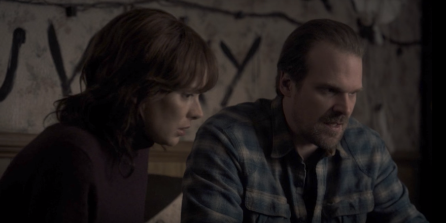
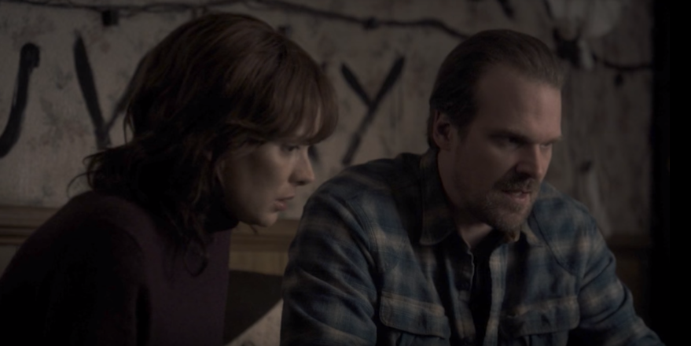

TELA INICIAL
PERSONAGENS / CARACTERÍSTICAS
RESENHA - 1ª Temp e 2ª Temp
EXTRA

O primeiro elemento da história a ser apresentado é o laboratório de Hawkins, onde um homem, após pegar um elevador, é pego por uma espécie de monstro. Enquanto isso, quatro amigos, Mike (Finn Wolfhard), Will (Noah Schnapp), Dustin (Gaten Matarazzo) e Lucas (Caleb McLaughlin) jogam RPG, onde os meninos sentem muito medo do tal vilão do jogo, Demogorgon, que consegue pegar Will, no jogo.
Após o jogo, Will passa próximo ao laboratório para ir para casa, mas é pego por alguma coisa. Nancy (Natalia Dyer) e Barb (Shannon Purser) conversam sobre Steve (Joe Keery), que as convida para uma festa em sua casa, uma vez que seus pais estarão fora.
O xerife Hopper (David Harbour) chega na delegacia e encontra Joyce (Winona Ryder), mãe de Will, desesperada por encontrar o filho desaparecido. Enquanto isso, no laboratório, o dr. Brenner (Matthew Modine) e sua equipe descem por um elevador, vestidos com roupas especiais e encontram uma espécie de coisa gosmenta, da qual falam que o monstro saiu. Além disso, eles comentam a cerca de uma menina fugitiva.
Depois disso, vemos uma garota invadindo uma lanchonete. Ela está suja, vestindo um avental como de hospital e tem sua cabeça raspada. O proprietário da lanchonete, por sua vez, veste a menina e liga para o serviço social. Ela diz que seu nome é Eleven (Onze) (Millie Bobby Brown). Voltando ao laboratório, vemos algumas pessoas com fones de ouvido, aparentemente ouvindo conversas telefônicas.
Mike, Dustin e Lucas decidem sair para procurar Will, alegando que, durante o jogo de RPG, Will havia se arriscado pelo grupo e eles deveriam fazer o mesmo pelo amigo. Na lanchonete, algumas pessoas do laboratório chegam dizendo ser da assistência social, matam o proprietário e tentam pegar Onze, que consegue fugir.
No meio da chuva, os meninos, que procuravam Will, encontram a Onze. Joyce conversa com seu filho Jonathan (Charlie Heaton) quando o telefone toca. Ela tem certeza de que Will ligara pra ela, mas ela não escuta voz alguma, apenas ruídos estranhos. Os meninos levam a Onze para casa e a escondem no porão. Mike tem a ideia de Onze tocar a campainha de casa, para que seus pais não soubessem que eles estavam na floresta de noite. Mas ela recusa, dizendo que está em perigo.
Joyce compra um novo telefone. Onze vê uma foto dos quatro meninos juntos e aponta para o rosto de Will e fica muito assustada. A amizade de Mike e Onze vai se estabelecendo uma vez que ele a ensina o significado das palavras amizade e promessa. Em seguida, vemos uma flash back de Onze sendo levada por dois homens. Enquanto eles a levam, ela grita repetidamente “papai”.
Mike conta para Lucas e Dustin que existe algo estranho por traz de Onze e que ela pode ajudar a encontrar Will, uma vez que ela o conhece. Lucas não concorda com a ideia e decide contar para os pais de Mike. Quando ele abre a porta, Onze a fecha duas vezes com a força da mente, já revelando seus poderes. Eles explicam para ela que amigos são pessoas pelas quais você faz qualquer coisa, não quebram promessas, trocam figurinhas e também sabem de coisas que os pais não podem saber.
Onze pega um bonequinho do RPG e diz que ele é o Will. Depois, vira o tabuleiro de cabeça pra baixo e diz que o Will está ali, se escondendo do Demogorgon. Nancy e Barbara chegam a festa na casa do Steve, mas Barbara não está contente. Ela acha que o Steve não gosta realmente de Nancy, mas só quer se divertir com ela por uma noite.
Jonathan vai para a floresta a procura de provas sobre o desaparecimento de Will e leva sua câmera. Ao se aproximar da casa de Steve, ele começa a tirar fotos das pessoas na festa. Nancy começa uma brincadeira de furar a cerveja e beber. Na sequencia, mesmo não estando animada, Barb faz também, mas corta a mão e vai ao banheiro lavá-la. Os outros se jogam na piscina.
Na casa de Joyce, o telefone toca e ao atendê-lo, ela escuta uma série de barulhos e também a voz de Will dizendo “mãe”. Logo após, o telefone queima, de novo. As luzes da casa começam a piscar, como em curto circuíto e ela as segue até o quarto de Will, onde o rádio começa a tocar uma música. Ela pergunta se é o Will que está lá e depois vê mãos saindo pela parece, como se alguém estivesse dentro do papel de parede.
Na casa de Steve, Nancy e os outros estão molhados e sobem para os quartos para se trocarem. Barbara fica revoltada com Nancy, que diz para ela ir embora. Chateada, Barb sai da casa e senta-se na piscina e Jonathan continua tirando fotos. O sangue do corte na mão de Barbara pinga na água da piscina, escutamos um barulho e a tela fica preta.
A Barbara acorda no lado invertido, onde Onze dissera que Will estava escondido, e acaba sendo pega pelo Demogorgon. Os meninos combinam de encontrar Onze 15h15 para procurarem pelo Will. Para isso, eles dão um relógio para ela. O Xerife Hopper decide ir até o laboratório investigar o sumiço do Will e consegue acesso às imagens das câmeras de segurança no dia em que o menino sumiu, mas não encontram nada incomum.
Já do lado de fora do laboratório, o xerife conversa com outros policiais sobre o dia do sumiço do Will, que estava chovendo, mas nas câmeras, não tinha chuva, portanto, eles estavam mentindo. Enquanto isso, Onze está sozinha na casa de Will, quando vê uma propaganda da Coca-Cola na televisão e tem mais um flash back, onde ela precisava amassar uma latinha do refrigerante com o poder da mente. Em seguida, seu nariz começa a sangrar.
Joyce decide usar luzes de natal para se comunicar com Will. Os amigos de Steve zombam dele e de Nancy por terem dormido juntos. Ninguém tem notícias de Barbara e Nancy começa a ficar preocupada. Mike, Lucas e Dustin sofrem bulling de dois meninos do colégio. O xerife e um policial procuram informações sobre o laboratório, em uma biblioteca. Eles lembram do caso de Terry Ives (Aimee Mullins), que alega ter tido sua filha sequestrada pela equipe do laboratório para experimentos, liderado pelo cientista Brenner. Os dois suspeitam que Will tenha visto algo sobre o caso e por isso teria sumido.
Alguém vê Jonathan revelando as fotos da noite na casa de Steve. Sabendo disso, o garoto zomba de Jonathan, rasga as fotos e quebra sua câmera. Nancy recolhe os pedaços das fotos e leva para casa. Ela retorna a casa de Steve e percebe que o carro de Barb continua lá. Em busca da menina, Nancy vê o Demogorgon, que ela define como “coisa sem rosto”. Ela conta para sua mãe sobre o sumiço da amiga.
Onze está esperando os meninos no local combinado, às 15h15, e ao ver um gatinho, ela se lembra de um experimento que passou, onde sua missão era matar um gato, o que ela não faz e acaba resultando num castigo. Ao ser levada para uma sala escura, fechada e silenciosa, ela mata os dois homens que a levavam e o doutor Benner aparenta ficar muito feliz com os poderes da menina.
Enquanto isso, Joyce está em casa quando as luzes de natal começam a piscar de forma estranha. Ela pede que, se for o Will, que fale com ela e isso acontece. Através do alfabeto desenhado na parede, ela pergunta onde ele está e ele responde “aqui”. Em seguida, ela pergunta o que ela deve fazer e ele responde “fuja!”. Logo em seguida, o Demogorgon sai da parede.
Os meninos e Onze seguem alguns carros da polícia que vão em direção a um lago. Lá, descobrem o corpo do Will. Mike fica muito chateado e alega que Onze mentiu para eles, dizendo que o Will ainda estava vivo. Joyce conta para o xerife o que aconteceu e ele vai até lá e conta para ela sobre o corpo do Will, mas ela não acredita, dizendo que acabara de conversar com o filho, através das luzes de natal. Todos começam a pensar que ela está louca.
Mike discute com Onze no porão de sua casa, querendo saber por que a menina mentiu para eles. Com o poder da mente, ela mexe no rádio e mostra para Mike a voz de Will cantando Should I Stay or Should I Go. Enquanto isso, Joyce e Jonathan vão reconhecer o corpo de Will. O xerife descobre que o responsável pela autópsia do menino foi alguém do governo, e não o legista de costume. Joyce pede para ver a marca de nascença de Will e sai de lá dizendo que aquele não é o seu filho.
O xerife conversa com o legista Gary, que diz ter achado muito estranho não permitirem que ele examine o corpo. Os meninos decidem levar Onze para o clube audiovisual, onde teria um rádio mais potente, com o qual ela poderia tentar encontrar Will. Para ela poder ir para a escola (onde fica o clube audiovisual), os meninos vestem ela como uma menina da época da série, colocam nela uma peruca e a maquiam, para que ninguém note que ela é diferente. Mike diz que ela está bonita.
 Ao chegar na escola, está acontecendo uma cerimônia pelo falecimento do Will, e eles precisam participar antes de usar o clube audiovisual. Ao fim do memorial, os meninos fazem bulling com Mike, Lucas e Dustin, mas Onze usa seu poder e faz um dos meninos fazer xixi na calça. No laboratório, um homem, vestindo uma roupa especial, entra no portal gosmento que leva para o mundo invertido, mas ele não volta. Tudo indica que ele morre lá dentro.
No funeral de Will, Nancy procura Jonathan para falar sobre uma das fotos que ele tirou de Barbara no dia da festa. Ela notou uma figura estranha ao lado da menina. Nancy conta que viu um bicho pessoalmente e que ele parecia um homem sem rosto. Jonathan acredita nela, por ser a mesma descrição que Joyce fez do monstro que ela viu em sua casa.
Enquanto isso, Onze tenta encontrar Will através do rádio do clube audiovisual. Ela lembra de um experimento que aconteceu com ela no laboratório, onde o doutor Brenner faz com que ela escute o que um homem está dizendo em uma sala muito distante da que ela está. As luzes do clube se apagam e eles começam a escutar barulhos. A cena é intercalada com Joyce em sua casa ouvindo a voz de Will, que parece estar dentro da parede. Ela tenta arrancar o papel de parede para resgatá-lo, em vão. O rádio do clube queima.
Ao chegar na escola, está acontecendo uma cerimônia pelo falecimento do Will, e eles precisam participar antes de usar o clube audiovisual. Ao fim do memorial, os meninos fazem bulling com Mike, Lucas e Dustin, mas Onze usa seu poder e faz um dos meninos fazer xixi na calça. No laboratório, um homem, vestindo uma roupa especial, entra no portal gosmento que leva para o mundo invertido, mas ele não volta. Tudo indica que ele morre lá dentro.
No funeral de Will, Nancy procura Jonathan para falar sobre uma das fotos que ele tirou de Barbara no dia da festa. Ela notou uma figura estranha ao lado da menina. Nancy conta que viu um bicho pessoalmente e que ele parecia um homem sem rosto. Jonathan acredita nela, por ser a mesma descrição que Joyce fez do monstro que ela viu em sua casa.
Enquanto isso, Onze tenta encontrar Will através do rádio do clube audiovisual. Ela lembra de um experimento que aconteceu com ela no laboratório, onde o doutor Brenner faz com que ela escute o que um homem está dizendo em uma sala muito distante da que ela está. As luzes do clube se apagam e eles começam a escutar barulhos. A cena é intercalada com Joyce em sua casa ouvindo a voz de Will, que parece estar dentro da parede. Ela tenta arrancar o papel de parede para resgatá-lo, em vão. O rádio do clube queima.
 Nancy e Jonathan estão na escola tentando aumentar a foto de Barbara, para descobrir se era o Demogorgon na imagem. O xerife vai visitar o corpo do Will, e num ato de coragem, ele corta a barriga do menino, encontrando apenas espuma dentro dele. Ele segue até o laboratório, onde entra com facilidade. Lá, ele encontra um quarto de criança e o portal gosmento. Nisso, alguém o agride e ele acorda no dia seguinte deitado em seu sofá, como se nada tivesse acontecido. Ele descobre uma escuta implantada em uma lâmpada de sua casa.
Joyce recebe uma visita inesperada do pai de Will e Jonathan, Lonnie (Ross Partridge). Jonathan quer contar sobre o que descobriu acerca do Demogorgon, mas seu pai diz que eles não podem alimentar a loucura da mãe. No porão de Mike, os meninos e a Onze conversam sobre o que seria o mundo invertido. O funeral do Will acontece. Os meninos conversam com o professor Clarke (Randy Havens) sobre a ideia de mundo invertido. Ele diz que, teoricamente, existem universos paralelos ao nosso e que para chegar lá seria necessário um portal, que caso já existisse, demandaria muita energia, que poderia até causar alterações no campo magnético, entre outras coisas.
Dustin percebe que suas bússolas estão alteradas, o que deve estar acontecendo devido ao campo magnético. Então, eles decidem seguir o norte “errado”, que a bússola aponta. Jonathan e Nancy treinam pontaria e tiros, para lidarem com o Demogorgon no futuro. Na floresta, os dois encontram um animal morrendo e decidem atirar nele, para que ele parasse de sofrer. Antes que pudessem atirar, o animal é levado por alguma coisa e eles ficam ali procurando o que poderia ter o levado. Nancy encontra um buraco em um tronco que a leva até o mundo invertido.
Ela encontra o Demogorgon se alimentando do animal e com muito sufoco consegue ser resgatada por Jonathan. Os meninos e a Onze estão andando no trilho do trem, quando Onze tem mais um flash back de um experimento num tanque de isolamento que ela utilizava para achar uma pessoa. Depois de darem muitas voltas, os meninos percebem que Onze estava alterando o norte da bússola para que eles não encontrassem o portal. Mike e Lucas brigam, e para separar, Onze arremessa Lucas longe, com seu poder da mente. Ele fica muito zangado.
Vemos mais um flash back, onde Onze teria que ouvir o que um homem, aparentemente russo estaria dizendo. Voltando ao mundo real, Onze desaparece. O xerife vai até Joyce e conta tudo que descobriu sobre o corpo falso de Will. Steve vai atrás de Nancy e encontra os dois no quarto da garota. Embora não estivesse acontecendo nada no momento, ele fica muito revoltado. Nancy chega a conclusão de que o Demogorgon vêm para o mundo real se alimentar e está sempre procurando sangue.

O xerife conta para Joyce sobre o quarto de criança que ele viu no laboratório, mas ao comparar o desenho presente no quarto e os desenhos de Will, eles percebem que o desenho que estava no laboratório não é de Will. Ele começa a pensar que poderia ser da filha de Terry Ives. Na casa de Terry, sua irmã conta que a moça participou de um estudo na faculdade, relacionado a LSD. As drogas teriam deixado Terry demente e ela teria perdido o bebê que carregava na época. Mas a moça sempre afirmou que não. Ela acreditava, ao contrario às provas, que teve seu bebê, mas que a menina foi roubada pelo laboratório para experimentos, uma vez que a menina teria poderes especiais.
Mike pede desculpas à Lucas e diz que eles devem ir juntos procurar a Onze e o Will. Luca não concorda em ir procurar Onze, dizendo que ela é uma traidora, então, ele vai sozinho em busca do portal. Onze entra em um mercado e rouba Waffles para comer. Num flash back, ela lembra de entrar novamente no tanque e procurar, novamente, o soviético que falava. Nancy e Jonathan compram equipamentos para lutarem contra o Demogorgon e acabam descobrindo que Steve e seus amigos picharam ofensas sobre Nancy na fachada do cinema da cidade. Ela vai tirar satisfação com Steve e ele e Jonathan acabam brigando. Chega a polícia.
Mike e Dustin são encontrados pelos meninos que sempre fazem bulling com eles. Com uma faca apontada ao pescoço de Dustin, um dos meninos pedem que Mike pule ladeira abaixo, ou ele cortaria Dustin. Ele pula e acaba sendo salvo por Onze. Os meninos ficam muito assustados e correm. Novamente, no espaço preto em que Onze vai quando entra no tanque, ela encontra o Demogorgon, mas fica desesperada e não consegue tocar nele. Ela conta para os meninos que foi ela quem abriu o portal e que, por isso, se considera um monstro. Eles três se abraçam.
Eles encontram Lucas, que os alerta que os homens maus estão chegando. Ao se aproximarem do grupo, Onze levanta uma caminhonete e eles conseguem fugir. Ao serem procurados por um helicóptero, eles se escondem dentro de um ônibus. Nancy e Jonathan explicam para o xerife o que aconteceu e porque eles compraram todo aquele equipamento. Um dos meninos que fizeram bulling com Mike e Dustin vai até a delegacia e denuncia Onze. O xerife começa a ligar os pontos.
Nancy e Jonathan estão na escola tentando aumentar a foto de Barbara, para descobrir se era o Demogorgon na imagem. O xerife vai visitar o corpo do Will, e num ato de coragem, ele corta a barriga do menino, encontrando apenas espuma dentro dele. Ele segue até o laboratório, onde entra com facilidade. Lá, ele encontra um quarto de criança e o portal gosmento. Nisso, alguém o agride e ele acorda no dia seguinte deitado em seu sofá, como se nada tivesse acontecido. Ele descobre uma escuta implantada em uma lâmpada de sua casa.
Joyce recebe uma visita inesperada do pai de Will e Jonathan, Lonnie (Ross Partridge). Jonathan quer contar sobre o que descobriu acerca do Demogorgon, mas seu pai diz que eles não podem alimentar a loucura da mãe. No porão de Mike, os meninos e a Onze conversam sobre o que seria o mundo invertido. O funeral do Will acontece. Os meninos conversam com o professor Clarke (Randy Havens) sobre a ideia de mundo invertido. Ele diz que, teoricamente, existem universos paralelos ao nosso e que para chegar lá seria necessário um portal, que caso já existisse, demandaria muita energia, que poderia até causar alterações no campo magnético, entre outras coisas.
Dustin percebe que suas bússolas estão alteradas, o que deve estar acontecendo devido ao campo magnético. Então, eles decidem seguir o norte “errado”, que a bússola aponta. Jonathan e Nancy treinam pontaria e tiros, para lidarem com o Demogorgon no futuro. Na floresta, os dois encontram um animal morrendo e decidem atirar nele, para que ele parasse de sofrer. Antes que pudessem atirar, o animal é levado por alguma coisa e eles ficam ali procurando o que poderia ter o levado. Nancy encontra um buraco em um tronco que a leva até o mundo invertido.
Ela encontra o Demogorgon se alimentando do animal e com muito sufoco consegue ser resgatada por Jonathan. Os meninos e a Onze estão andando no trilho do trem, quando Onze tem mais um flash back de um experimento num tanque de isolamento que ela utilizava para achar uma pessoa. Depois de darem muitas voltas, os meninos percebem que Onze estava alterando o norte da bússola para que eles não encontrassem o portal. Mike e Lucas brigam, e para separar, Onze arremessa Lucas longe, com seu poder da mente. Ele fica muito zangado.
Vemos mais um flash back, onde Onze teria que ouvir o que um homem, aparentemente russo estaria dizendo. Voltando ao mundo real, Onze desaparece. O xerife vai até Joyce e conta tudo que descobriu sobre o corpo falso de Will. Steve vai atrás de Nancy e encontra os dois no quarto da garota. Embora não estivesse acontecendo nada no momento, ele fica muito revoltado. Nancy chega a conclusão de que o Demogorgon vêm para o mundo real se alimentar e está sempre procurando sangue.

O xerife conta para Joyce sobre o quarto de criança que ele viu no laboratório, mas ao comparar o desenho presente no quarto e os desenhos de Will, eles percebem que o desenho que estava no laboratório não é de Will. Ele começa a pensar que poderia ser da filha de Terry Ives. Na casa de Terry, sua irmã conta que a moça participou de um estudo na faculdade, relacionado a LSD. As drogas teriam deixado Terry demente e ela teria perdido o bebê que carregava na época. Mas a moça sempre afirmou que não. Ela acreditava, ao contrario às provas, que teve seu bebê, mas que a menina foi roubada pelo laboratório para experimentos, uma vez que a menina teria poderes especiais.
Mike pede desculpas à Lucas e diz que eles devem ir juntos procurar a Onze e o Will. Luca não concorda em ir procurar Onze, dizendo que ela é uma traidora, então, ele vai sozinho em busca do portal. Onze entra em um mercado e rouba Waffles para comer. Num flash back, ela lembra de entrar novamente no tanque e procurar, novamente, o soviético que falava. Nancy e Jonathan compram equipamentos para lutarem contra o Demogorgon e acabam descobrindo que Steve e seus amigos picharam ofensas sobre Nancy na fachada do cinema da cidade. Ela vai tirar satisfação com Steve e ele e Jonathan acabam brigando. Chega a polícia.
Mike e Dustin são encontrados pelos meninos que sempre fazem bulling com eles. Com uma faca apontada ao pescoço de Dustin, um dos meninos pedem que Mike pule ladeira abaixo, ou ele cortaria Dustin. Ele pula e acaba sendo salvo por Onze. Os meninos ficam muito assustados e correm. Novamente, no espaço preto em que Onze vai quando entra no tanque, ela encontra o Demogorgon, mas fica desesperada e não consegue tocar nele. Ela conta para os meninos que foi ela quem abriu o portal e que, por isso, se considera um monstro. Eles três se abraçam.
Eles encontram Lucas, que os alerta que os homens maus estão chegando. Ao se aproximarem do grupo, Onze levanta uma caminhonete e eles conseguem fugir. Ao serem procurados por um helicóptero, eles se escondem dentro de um ônibus. Nancy e Jonathan explicam para o xerife o que aconteceu e porque eles compraram todo aquele equipamento. Um dos meninos que fizeram bulling com Mike e Dustin vai até a delegacia e denuncia Onze. O xerife começa a ligar os pontos.
 O xerife, Joyce, Jonathan e Nancy conseguem contato com os meninos escondidos no ônibus e salva os garotos. Chegando na casa de Will, todo mundo se esclarece. Eles decidem preparar uma espécie de tanque, como o que a Onze utilizava no laboratório, para que ela pudesse entrar em contato com Will e Barbara. A ideia dá certo e Onze encontra Barbara morta e Will fraco. O xerife e a Joyce vão até o laboratório e acabam sendo encontrados. Eles conseguem um acordo com o doutor Brenner, eles acham Will no mundo invertido e não contam nada pra ninguém.
Enquanto estão no mundo invertido, vemos flash backs sobre a vida do xerife Hopper, enquanto sua filha Sara ainda estava viva. Nancy e Jonathan atraem o Demogorgon e criam armadilhas para capturá-lo. Eles cortam as mãos para atrair o monstro com o sangue. Steve chega na casa e não entende nada, mas acaba sendo útil para lutar contra o monstro. Na escola, Mike promete pra Onze que, quando tudo acabar, ela vai ter uma família. Em seguida, ele diz que gosta dela e a beija.
O pessoal do laboratório chega na escola, Onze os mata e eles conseguem fugir, mas logo são pegos pelo doutor Brenner, visto que Onze já estava muito fraca para livrar eles mais uma vez. Mas o Demogorgon aparece, atraido pelo sangue (muito sangue) dos agentes mortos. O doutor Brenner é morto e os meninos fogem novamente. No mundo invertido, Hopper e Joyce encontram Barbara morta e Will com uma cobra na boca, quase morto. Fazem um ressuscitamento no menino e conseguem acordá-lo.
O Demogorgon chega na sala em que os meninos estão escondidos e eles tentam lutar com um estilingue e pedras. Onze levanta, mata o Demogorgon e desaparece. Os meninos ficam chamando por ela mas não encontram. Will é levado para o hospital e um mês depois, já aparece jogando RPG com os amigos, como no inicio da série. Nancy presenteia Jonathan com uma câmera nova e continua namorando Steve. O xerife vai a uma festa de natal na delegacia, pega comidas e deixa na floresta, para alguém.
Will tem alumas reações estranhas. Depois de tossir ele cospe uma larva e por alguns segundos, ele vê o mundo invertido. Ele não conta para ninguém.
O xerife, Joyce, Jonathan e Nancy conseguem contato com os meninos escondidos no ônibus e salva os garotos. Chegando na casa de Will, todo mundo se esclarece. Eles decidem preparar uma espécie de tanque, como o que a Onze utilizava no laboratório, para que ela pudesse entrar em contato com Will e Barbara. A ideia dá certo e Onze encontra Barbara morta e Will fraco. O xerife e a Joyce vão até o laboratório e acabam sendo encontrados. Eles conseguem um acordo com o doutor Brenner, eles acham Will no mundo invertido e não contam nada pra ninguém.
Enquanto estão no mundo invertido, vemos flash backs sobre a vida do xerife Hopper, enquanto sua filha Sara ainda estava viva. Nancy e Jonathan atraem o Demogorgon e criam armadilhas para capturá-lo. Eles cortam as mãos para atrair o monstro com o sangue. Steve chega na casa e não entende nada, mas acaba sendo útil para lutar contra o monstro. Na escola, Mike promete pra Onze que, quando tudo acabar, ela vai ter uma família. Em seguida, ele diz que gosta dela e a beija.
O pessoal do laboratório chega na escola, Onze os mata e eles conseguem fugir, mas logo são pegos pelo doutor Brenner, visto que Onze já estava muito fraca para livrar eles mais uma vez. Mas o Demogorgon aparece, atraido pelo sangue (muito sangue) dos agentes mortos. O doutor Brenner é morto e os meninos fogem novamente. No mundo invertido, Hopper e Joyce encontram Barbara morta e Will com uma cobra na boca, quase morto. Fazem um ressuscitamento no menino e conseguem acordá-lo.
O Demogorgon chega na sala em que os meninos estão escondidos e eles tentam lutar com um estilingue e pedras. Onze levanta, mata o Demogorgon e desaparece. Os meninos ficam chamando por ela mas não encontram. Will é levado para o hospital e um mês depois, já aparece jogando RPG com os amigos, como no inicio da série. Nancy presenteia Jonathan com uma câmera nova e continua namorando Steve. O xerife vai a uma festa de natal na delegacia, pega comidas e deixa na floresta, para alguém.
Will tem alumas reações estranhas. Depois de tossir ele cospe uma larva e por alguns segundos, ele vê o mundo invertido. Ele não conta para ninguém.
Vídeo - Resumão Da 1ª Temporada
Copyright By Davi Q.G © 2022